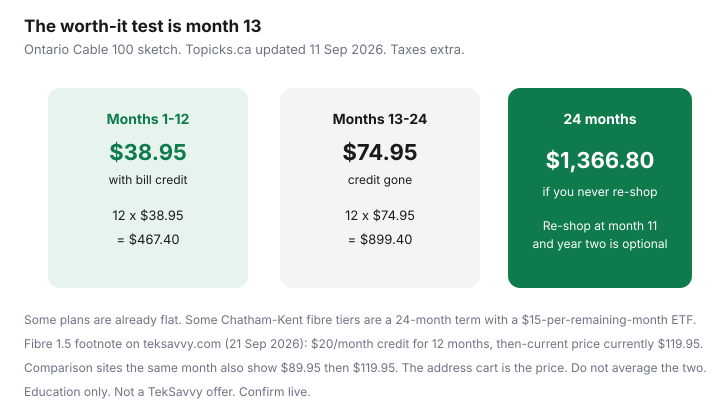

Internet · Canada
Is TekSavvy Worth It in Canada? Speed Tiers, Credits Expiry, and Support Trade-Offs
TekSavvy is worth it when the address qualifies, you can read a 12-month credit without pretending it is a forever price, and you want a Canadian independent that still answers a phone. It is a poor fit when you need a store and a same-day technician, when you will not re-shop at month 11, or when a flat-rate reseller or a Big-3 winback beats the 24-month total. The brand is not the bargain. The cart is.
Pair this with TekSavvy versus Oxio and the three-quote sheet. Education only. No TekSavvy partnership.
Disclosure: A compatible DOCSIS modem and a Wi-Fi router are offer types: hardware you might buy so you are not stuck with a weak gateway radio. Saving Optimizer does not claim a live retailer partnership or a commission on those categories today. Buy only a model on TekSavvy’s current approved list for your plant. We do not earn anything if you become a TekSavvy customer.
Key takeaways
- TekSavvy rides other companies’ plant: cable (Rogers, Cogeco, Shaw, Videotron, Eastlink), DSL (Bell, Telus), and fibre pockets. It reaches situations Oxio does not, including Atlantic fibre-tagged plans. The node is still the incumbent’s.
- Many headline rates are 12-month bill credits. Ontario Cable 100 in an 11 Sep 2026 comparison: $38.95 then $74.95. Staying put all 24 months is about $1,366.80 before tax, not $38.95 forever.
- TekSavvy’s fibre footnotes (read 21 Sep 2026) are more precise than blog tables, and they do not always match those tables. Use the address cart.
- Loaner hardware at $0 is still their property. A bought modem is only a save on plans that allow BYO, on the approved list.
- Phone support is the product difference versus chat-only resellers. A store on the corner is still the Big-3 product. TV and home-phone intros are optional cliffs.
Where TekSavvy rides Rogers/Cogeco/Bell/Telus/Videotron plant
Third-party access means TekSavvy sells the retail relationship on infrastructure it does not own. Topicks.ca’s 11 Sep 2026 Oxio-versus-TekSavvy write-up, which matches how TekSavvy describes availability (“where access and technology permit”), maps it like this:
| Plant | Where that comparison placed it | What you should expect |
|---|---|---|
| Cable | Rogers, Cogeco, Shaw, Videotron, Eastlink footprints | Uploads often far below download, except tiers the cart marks as symmetrical |
| DSL | Bell and Telus lines in ON, QC, AB, BC on that page | Fine for light use. A poor substitute for fibre upload |
| Fibre | Select areas. Sole listed TekSavvy option in NS and PE on that page | Can be the symmetrical product. Often the one with the credit footnote |
Québec cable shoppers should also price Fizz versus Videotron. Riding Videotron plant through TekSavvy is not the same bill as Fizz. Outages still get fixed by the plant owner’s clock, then by TekSavvy’s queue. That is the trade for a lower retail rate.
Reading the fine print on 12-month bill credits
TekSavvy’s internet page (21 Sep 2026) says “up to 12 months of bill credits on select internet packages in select regions” and “no offer lasts forever.” Two primary-source footnotes from the same day:
- Fibre 1.5 Gbps in select Ontario and Québec: a monthly bill credit of $20 for the first 12 months. After that, “our then-current price (currently $119.95).” Loaner modem required. Hardware stays TekSavvy’s. Non-return is charged at the undiscounted hardware value.
- Chatham-Kent fibre on a 24-month term (select areas): credit of $30, $20, or $10 a month for the first 12 months on Fibre 3 Gig, 1 Gig, or 500, against then-current rates the page listed at $114.95, $94.95, and $74.95. Modem and router rental at no cost during the term. Early cancellation fee: $15 per remaining month. Extra construction can apply.
Comparison sites do not line up perfectly with that $20 fibre credit. Topicks (11 Sep 2026) and a WhistleOut 1.5 Gbps card both show $89.95 for 12 months then $119.95. A $20 credit off $119.95 would display as $99.95, not $89.95. Do not average them in your head. The qualified cart is the contract. Screenshot it.
Cable rows from that same Topicks update, Ontario, unlimited:
- Cable 30, 12-month term: $32.95 then $65.95
- Cable 100, no contract in that table: $38.95 then $74.95
- Cable 500: $75.95 then $110.95
- Cable 1 Gbps (1024/200): $71.95 then $120.95

A no-contract credit is safer than a credit welded to a 24-month ETF, because you can leave when the price jumps. The Chatham-Kent shape is the one to read twice: the low rate ends at month 12, the term does not, and $15 times the remaining months is still money. Some DSL and Québec cable tiers are sold flat with no promo dip. Those compare cleanly to Oxio. The cart will say which kind you are buying.
Buying or rent-to-own modem vs ISP gateway
TekSavvy’s own copy (21 Sep 2026): you need a modem; a router, or a combo, is what makes Wi-Fi. On eligible plans they lend a Wi-Fi modem at no extra monthly fee. The fibre footnotes are explicit that the loaner is not yours. “Free rental” that you must return is not rent-to-own.
Buying makes sense when three things are true: the plan allows a customer modem, the exact model is on the approved list for that cable plant (Rogers firmware is not Videotron firmware), and the payback beats $0 loaner. If the loaner is $0, a purchased modem does not “pay for itself” unless you wanted your own router behind a bridge-mode stick, or you are leaving a Big-3 gateway rental in the $10 range. The buy-versus-rent guide has the payback. A DOCSIS modem and a separate Wi-Fi router are the hardware types that match this decision. A random Amazon.com model is how people spend $150 to own a brick.
Support expectations vs Big-3 stores and techs
Topicks’ 11 Sep 2026 head-to-head lists TekSavvy with phone (called 24/7 in that table), email, live chat, social messages, a forum, and a network-status page. Oxio on the same table is chat and SMS, which matches Oxio’s homepage hours of 8 a.m. to 7 p.m., seven days. If someone in the household will not use chat, TekSavvy’s phone line is a feature you can put a dollar on. If you want a retail store and a branded van the same afternoon, you are describing Rogers, Bell, Telus, or Videotron, and you will usually pay their retail rate for it.
Plant trouble still waits on the wholesaler. TekSavvy can open the ticket. They cannot splice Bell’s fibre faster by being nicer on the phone. Set that expectation before you switch a work-from-home desk on a Friday.
TV add-ons and whether you need them
TekSavvy sells TV and a digital home phone (TekTalk). The offers page reviewed alongside the 21 Sep 2026 research has advertised internet with a month of TV, or TekTalk unlimited at $0 for six months. That is a promo shape you already know from incumbents: the intro ends. Add TV only if the channels are ones you will watch after the free month, and put the post-intro price on the unbundle worksheet. A home phone you will not answer is not a gift in month seven. Oxio’s pitch is that they do not need you to bundle. TekSavvy’s pitch is that you can. Neither pitch is the math.
Who TekSavvy fits: price hunters with address eligibility
TekSavvy fits a household that:
- qualifies at the civic address on a tier with enough upload for how they work;
- will screenshot the after-credit price and calendar month 11;
- prefers a phone queue to a Big-3 store, and accepts wholesale repair times;
- is happy to skip TV, or has priced TV with eyes open.
TekSavvy is the wrong default when Oxio’s flat rate wins the 24-month total and you like chat, when Fizz is cheaper on the same Québec cable, or when a written Bell or Rogers winback undercuts both. Atlantic readers should still run TekSavvy: Oxio’s own province list does not include New Brunswick, Nova Scotia, Prince Edward Island, or Newfoundland and Labrador. Eligibility first. Loyalty never.
Sources & date stamps
- TekSavvy.com internet, fibre, and metro-fibre pages — 12-month credits, Fibre 1.5 $20 credit and $119.95 then-current price, Chatham-Kent term and $15 per remaining month, loaner hardware. Read 21 Sep 2026.
- TekSavvy offers page — unlimited plans; TV and TekTalk intro shapes. Read 21 Sep 2026.
- Topicks.ca, Oxio vs TekSavvy (2026), updated 11 Sep 2026 — Ontario cable rows, coverage map, support-channel contrast. Confirm live.
- WhistleOut TekSavvy Fibre 1500 card — $89.95 then $119.95. Conflicts with a plain $20-off reading. Cart wins.
- Companion guide TekSavvy vs Oxio — same figures, 24-month Ontario 100 sketch.
Frequently asked questions
Does TekSavvy own the cable or fibre on my street?
No. TekSavvy is a retailer on other companies' last mile: cable over Rogers, Cogeco, Shaw, Videotron, or Eastlink where those plants exist, DSL over Bell or Telus in several provinces, and fibre in select areas. Congestion and outages follow the plant owner. The bill, the credit, and the support queue are TekSavvy's.
Will the price stay at the advertised monthly rate?
Often no. TekSavvy's own internet page, read 21 Sep 2026, says you can get up to 12 months of bill credits on select packages, and that advertised prices may change. Ontario Cable 100 in an 11 Sep 2026 comparison was $38.95 then $74.95. Read the cart for the after-credit rate before you celebrate month one.
Can I buy my own modem?
On many cable plans, yes, if the model is on TekSavvy's current approved list for that plant. The fibre pages reviewed 21 Sep 2026 describe a loaner modem or router at $0 that remains TekSavvy's property, with a non-return charge up to the hardware value (one fibre footnote cited up to $279.95 depending on model). Do not buy a U.S. retail modem and hope.
Is phone support actually 24/7?
Topicks.ca's 11 Sep 2026 comparison lists TekSavvy phone support as 24/7, plus email, chat, and a forum. Confirm the hours on teksavvy.com when you sign up. Hours pages move. Oxio, by contrast, publishes chat and text from 8 a.m. to 7 p.m.
Should I add TekSavvy TV or TekTalk?
Only if you will still want them when the intro ends. TekSavvy's offers page has bundled a month of TV or six months of TekTalk at $0 with internet. Those are promos, not proof the add-on is cheap in month seven. Price internet alone first.